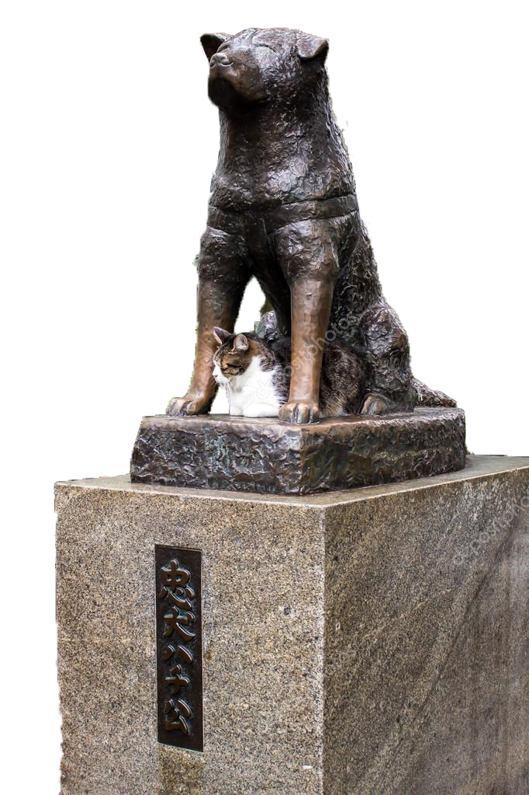
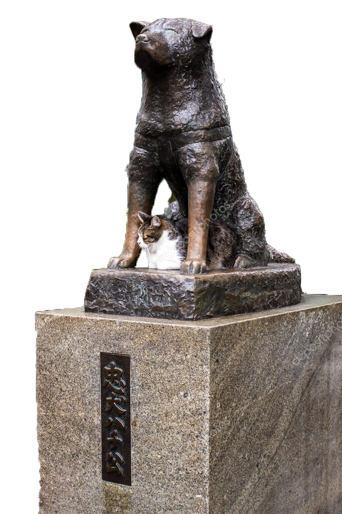
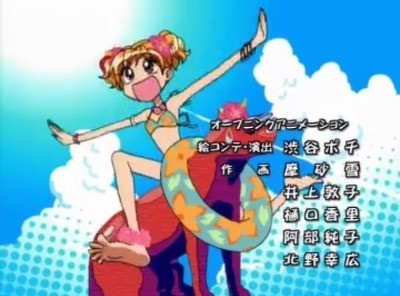
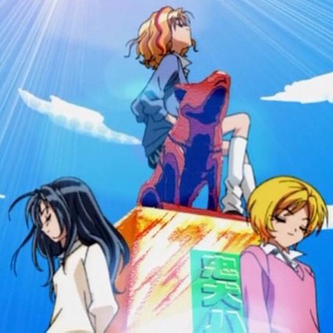
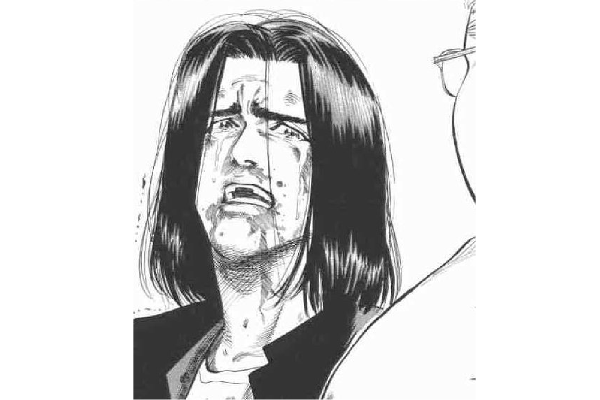

시부야에서 하치코 만난 ssul

때는 바야흐로 2019년 1월, 학교에서 일본 치바대학에 놀ㄹㅓ.. 아니 워크숍을 하러 갔다.
워크숍이 끝난 뒤 친구들과 나는 자유를 얻어 도쿄로 놀러갈 계획을 세웠다.
어렸을 적 애니메이션 중독자였던 서희는 애니 <슈퍼갤즈>의 배경인 시부야를 가기위해 친구에게 노래를 불러줬다.


워크숍이 끝난 뒤 친구들과 나는 자유를 얻어 도쿄로 놀러갈 계획을 세웠다.
어렸을 적 애니메이션 중독자였던 서희는 애니 <슈퍼갤즈>의 배경인 시부야를 가기위해 친구에게 노래를 불러줬다.
<참고자료> 슈퍼갤즈
 
